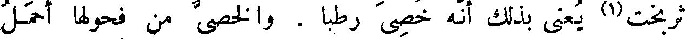
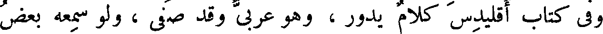
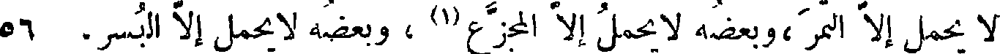

File: 000452.gt.txt (if the image is defective, simply delete all Arabic text and the line will be excluded)

ثقف(2) في التحريك للأوتار ، فإنه كان في ذلك مقدما ، وبه مذكورا .
File: 000453.gt.txt (if the image is defective, simply delete all Arabic text and the line will be excluded)

وأما الخصاء فهو أن يسل الخصيتين ، والوجاء أن توجأ العروق والخصيتان
File: 000454.gt.txt (if the image is defective, simply delete all Arabic text and the line will be excluded)

على حالهما . والمعصوب من التيوس الذي تعصب خصيتاه حتى تسقطا .
File: 000455.gt.txt (if the image is defective, simply delete all Arabic text and the line will be excluded)

بعروقهما . والصفن : جلدة الخصيتين .
File: 000456.gt.txt (if the image is defective, simply delete all Arabic text and the line will be excluded)
( خصاء البهائم و الديكة )
File: 000457.gt.txt (if the image is defective, simply delete all Arabic text and the line will be excluded)

والخصاء في أحداث البهائم ، وفي الغنم خاصة ، يدع اللحم رخصا
File: 000458.gt.txt (if the image is defective, simply delete all Arabic text and the line will be excluded)

ونديا عذبا ؛ فإن خصاه بعد الكبر،لم يقو خصاؤه - بعد استحكام القوة -
File: 000459.gt.txt (if the image is defective, simply delete all Arabic text and the line will be excluded)

على قلب طباعه . وأجود الخصاء ما كان في الصغر ، وهو يسمى بالفارسية
File: 000460.gt.txt (if the image is defective, simply delete all Arabic text and the line will be excluded)

ثربخت(1) يعنى بذلك أنه خصى رطبا . والخصى من فحولها أحمل
File: 000461.gt.txt (if the image is defective, simply delete all Arabic text and the line will be excluded)

للشحم ، لعدم الهيج والنعظ ، وخروج قواه مع ماء الفحلة(2) . وكثرة
File: 000462.gt.txt (if the image is defective, simply delete all Arabic text and the line will be excluded)

السفاد تورث الضعف والهزال في جميع الحيوان . وقد ذكر لمعاوية
File: 000463.gt.txt (if the image is defective, simply delete all Arabic text and the line will be excluded)

كثرة الجماع فقال : ما استهتر به أحد إلا رأيت ذلك في منته(3) .
File: 000464.gt.txt (if the image is defective, simply delete all Arabic text and the line will be excluded)

والديك يخصى ليرطب لحمه ويطيب ويحمل الشحم .
File: 000465.gt.txt (if the image is defective, simply delete all Arabic text and the line will be excluded)

( خصاء العرب لفحولة الإبل )
File: 000466.gt.txt (if the image is defective, simply delete all Arabic text and the line will be excluded)

وكانت العرب تخصى فحولة الإبل لئلا يأكل بعضها بعضا ،
File: 000467.gt.txt (if the image is defective, simply delete all Arabic text and the line will be excluded)

السامع لما فيه من الروية ، ويحتاج من اللفظ إلى مقدار يرتفع به عن
File: 000468.gt.txt (if the image is defective, simply delete all Arabic text and the line will be excluded)

45 ألفاظ السفلة والحشو(1) ، ويحطه من غريب الأعراب ووحشي الكلام ،
File: 000469.gt.txt (if the image is defective, simply delete all Arabic text and the line will be excluded)

وليس له أن يهذبه جدا ، وينقحه ويصفيه ويروقه ، حتى لاينطق
File: 000470.gt.txt (if the image is defective, simply delete all Arabic text and the line will be excluded)

إلا بلب اللب ، وباللفظ الذي قد حذف فضوله ، وأسقط زوائده(2) ،
File: 000471.gt.txt (if the image is defective, simply delete all Arabic text and the line will be excluded)

حتى عاد خالصا لا شوب فيه ؛ فإنه إن فعل ذلك ، لم يفهم عنه إلا بأن
File: 000472.gt.txt (if the image is defective, simply delete all Arabic text and the line will be excluded)

يجدد لهم إفهاما مرارا وتكرارا ، لأن الناس كلهم قد تعودوا المبسوط من
File: 000473.gt.txt (if the image is defective, simply delete all Arabic text and the line will be excluded)

الكلام ، وصارت أفهامهم لا تزيد على عاداتهم إلا بأن يعكس عليها
File: 000474.gt.txt (if the image is defective, simply delete all Arabic text and the line will be excluded)

ويؤخذ بها . ألا ترى أن كتاب المنطق الذي قد وسم بهذا الاسم ،
File: 000475.gt.txt (if the image is defective, simply delete all Arabic text and the line will be excluded)

لو قرأته على جميع خطباء الأمصار وبلغاء الأعراب ، لما فهموا أكثره ،
File: 000476.gt.txt (if the image is defective, simply delete all Arabic text and the line will be excluded)

وفي كتاب إقليدس كلام يدور ، وهو عربي وقد صفي ، ولو سمعه بعض
File: 000477.gt.txt (if the image is defective, simply delete all Arabic text and the line will be excluded)
الخطباء لما فهمه ، ولا يمكن أن يفهمه من يريد تعليمه ، لأنه يحتاج إلى
File: 000478.gt.txt (if the image is defective, simply delete all Arabic text and the line will be excluded)

أن يكون قد عرف جهة الأمر ، وتعود اللفظ المنطقي الذي استخرج
File: 000479.gt.txt (if the image is defective, simply delete all Arabic text and the line will be excluded)

من جميع الكلام .
File: 000480.gt.txt (if the image is defective, simply delete all Arabic text and the line will be excluded)
( قول صحار العبدي في الإيجاز ، و نقده )
File: 000481.gt.txt (if the image is defective, simply delete all Arabic text and the line will be excluded)

قال معاوية بن أبي سفيان ، رضي الله عنهما، لصحار العبدي(2) :
File: 000482.gt.txt (if the image is defective, simply delete all Arabic text and the line will be excluded)

وقال ذات يوم : لو كان النخل بعضه لا يحمل إلا الرطب ، وبعضه
File: 000483.gt.txt (if the image is defective, simply delete all Arabic text and the line will be excluded)

لا يحمل إلا التمر ،وبعضه لا يحمل إلا المجزع(1) ، وبعضه لا يحمل إلا البسر، 56
File: 000484.gt.txt (if the image is defective, simply delete all Arabic text and the line will be excluded)

وبعضه لا يحمل إلا الخلال ، وكنا متى تناولنا من الشمراخ بسرة ، خلق
File: 000485.gt.txt (if the image is defective, simply delete all Arabic text and the line will be excluded)

الله مكانها بسرتين ، لما كان بذلك بأس ! ثم قال : أستغفر الله !
File: 000486.gt.txt (if the image is defective, simply delete all Arabic text and the line will be excluded)

لو كنت تمنيت أن يكون بدل نواة التمر زبدة كان أصوب ! !
File: 000487.gt.txt (if the image is defective, simply delete all Arabic text and the line will be excluded)

ومنه ما يعرض من جهة الأوجاع التي تعرض للمذاكير والخصيتين ،
File: 000488.gt.txt (if the image is defective, simply delete all Arabic text and the line will be excluded)

حتى ربما امتلخهما طبيب ، وربما قطع إحداهما ، وربما سقطتا جميعا
File: 000489.gt.txt (if the image is defective, simply delete all Arabic text and the line will be excluded)

( نسل منزوع البيضة اليسرى )
File: 000490.gt.txt (if the image is defective, simply delete all Arabic text and the line will be excluded)
من تلقاء أنفسهما .
File: 000491.gt.txt (if the image is defective, simply delete all Arabic text and the line will be excluded)

والعوام يزعمون أن الولد إنما يكون من البيضة اليسرى(2) . وقد
File: 000492.gt.txt (if the image is defective, simply delete all Arabic text and the line will be excluded)

زعم ناس من أهل سليمان بن علي ومواليهم ، أن ولد داود بن جعفر
File: 000493.gt.txt (if the image is defective, simply delete all Arabic text and the line will be excluded)

الخطيب المعتزلي ، إنما ولد له بعد أن نزعت بيضته اليسرى ، لأمر كان
File: 000494.gt.txt (if the image is defective, simply delete all Arabic text and the line will be excluded)

عرض له .
File: 000495.gt.txt (if the image is defective, simply delete all Arabic text and the line will be excluded)

والخصي الطيان . الذي كان في مسجد آبن رغبان(3) ، ولد له
File: 000496.gt.txt (if the image is defective, simply delete all Arabic text and the line will be excluded)

غلام ، وكان ليس له إلا البيضة اليمنى ، فجاء أشبه به من الذباب بالذباب
File: 000497.gt.txt (if the image is defective, simply delete all Arabic text and the line will be excluded)

والغراب بالغراب ، ولو أبصره أجهل خلق الله تعالى بفراسة ، وأبعدهم من
File: 000498.gt.txt (if the image is defective, simply delete all Arabic text and the line will be excluded)

قيافة ، ومن مخالطة النخاسين ، أو من مجالسة الأعراب ، لعلم أنه سلالته
File: 000499.gt.txt (if the image is defective, simply delete all Arabic text and the line will be excluded)

خلال ذلك ، ووافقت امرأة تحسن الاختيار ، وتفهم الأمور ، فوجدت
File: 000500.gt.txt (if the image is defective, simply delete all Arabic text and the line will be excluded)

لذلك الجمز راحة ، ومع الراحة لذة ، فأمرتهم أن يسيروا بها في تلك السيرة،
File: 000501.gt.txt (if the image is defective, simply delete all Arabic text and the line will be excluded)

فما زالوا يقربون ويبعدون ، ويخطئون ويصيبون ، وهي في كل ذلك تصوبهم